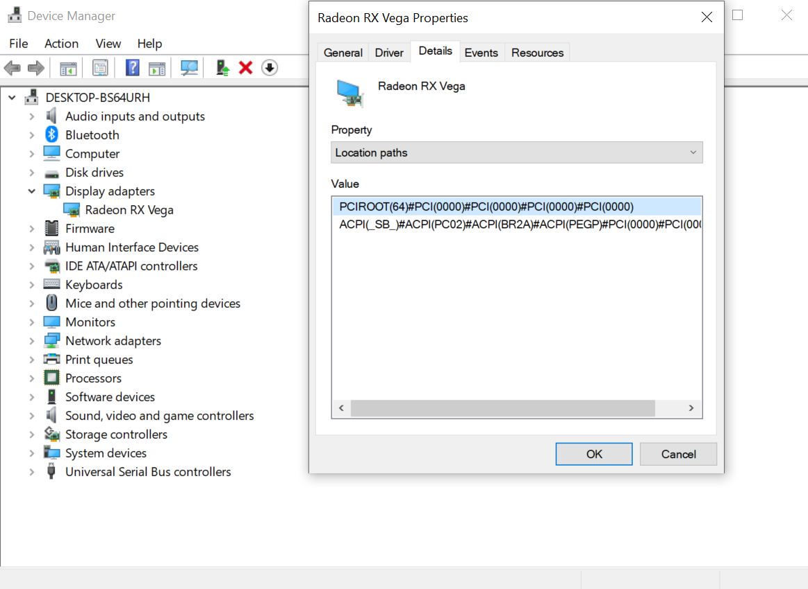
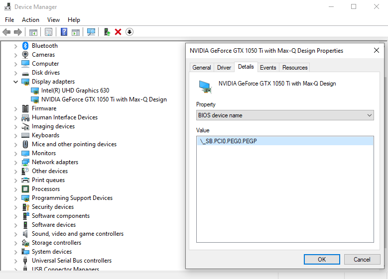

Last modified: Thu Jun 18 2020 15:35:29 GMT+0000 (Coordinated Universal Time)
Disabling desktops unsupported GPUs(SSDT-GPU-DISABLE)
So this is mainly needed for GPUs that are not supported in macOS, mainly this will be Nvidia users who wish to pair an AMD GPU for macOS use. While WhateverGreen does support the boot-arg -wegnoegpu, this only works when running on iGPU so for the rest of us we'll need to make an SSDT.
So to disable a specific GPU, we need to find a couple things:
- ACPI Path of the GPU
- SSDT-GPU-DISABLE
Finding the ACPI Path of the GPU
To find the PCI path of a GPU is fairly simple, best way to find it is running Windows:
- Open Device Manager
- Select Display Adapters, then right click your GPU and select Properties
- Under the Details Tab, search for "Location Paths"
- Note some GPUs may be hiding under "BIOS device name"


The second "ACPI" is what we care about:
ACPI(_SB_)#ACPI(PC02)#ACPI(BR2A)#ACPI(PEGP)#PCI(0000)#PCI(0000)
Now converting this to an ACPI path is quite simple, remove the #ACPI and #PCI(0000):
`_SB_.PC02.BR2A.PEGP
And voila! We've found our ACPI path, now that we have everything we're ready to get cooking
Making the SSDT
To start grab our SSDT-GPU-DISABLE and open it up. Here there's a couple things to change:
External (_SB_.PCI0.PEG0.PEGP, DeviceObj)
Method (_SB.PCI0.PEG0.PEGP._DSM, 4, NotSerialized)
For our example, we'll change all mentions of :
PCI0withPC02PEG0withBR2A
Hint: If your ACPI path is a bit shorter than the example, this is fine. Just make sure the ACPI paths are correct to your device, some users may also need to adapt _SB_ to their path